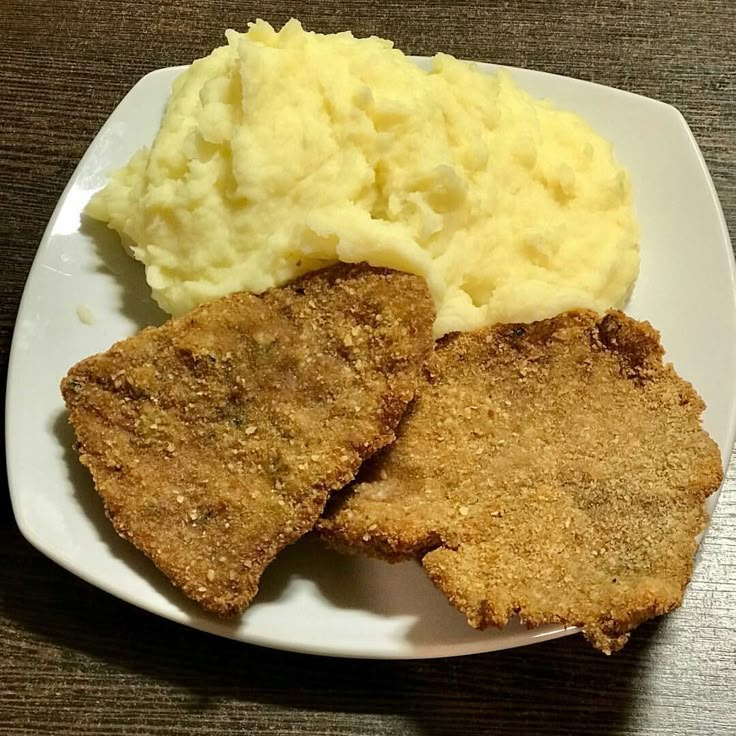

d
milanesas con pure
con esta pagina aprenderemos a hacer milanesas con pure(o mas o menos)
ingredientes
- papas
- pan rallado
- leche
- manteca
- huevos
- perejil
- aceite
- mostaza
- carne
preparacion
- pelar las papas
- hervir las papas
- sacar las papas y pisarlas con el pisa papas
- agregar manteca y esperar que se disuelva
- agregar leche a gusto
- limpiar los filetes
- mezclar en un bol los huevos,perejil y un toque de moztaza o leche
- reposar la carne en la mezcla y ponerlo 30 minutos en la heladera
- empanizar el filete en pan rallado
- freir en una sarten con buena cantidad de aceite
- escurrir las milanesas en papel absorvente
- disfruta comiendo


recetas hellmans
milanesas perfectas
trucos para milanesas
cocineros argentinos
milanesas de carne